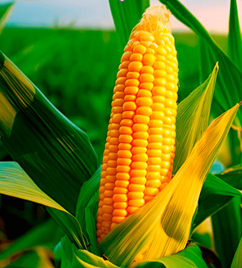

Enfermedades de las Hojas de Maíz
Clasificación de imágenes de hojas de maíz utilizando la cámara web y Tensorflow.js hola isaias
IA para Agricultura
Este proyecto ayuda a identificar enfermedades y plagas en las hojas de maíz.